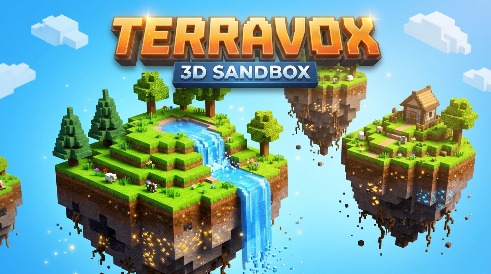
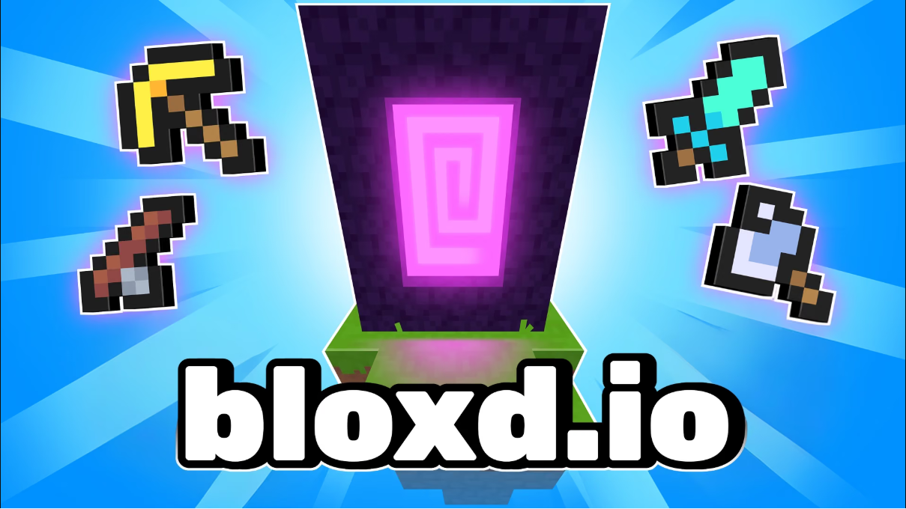
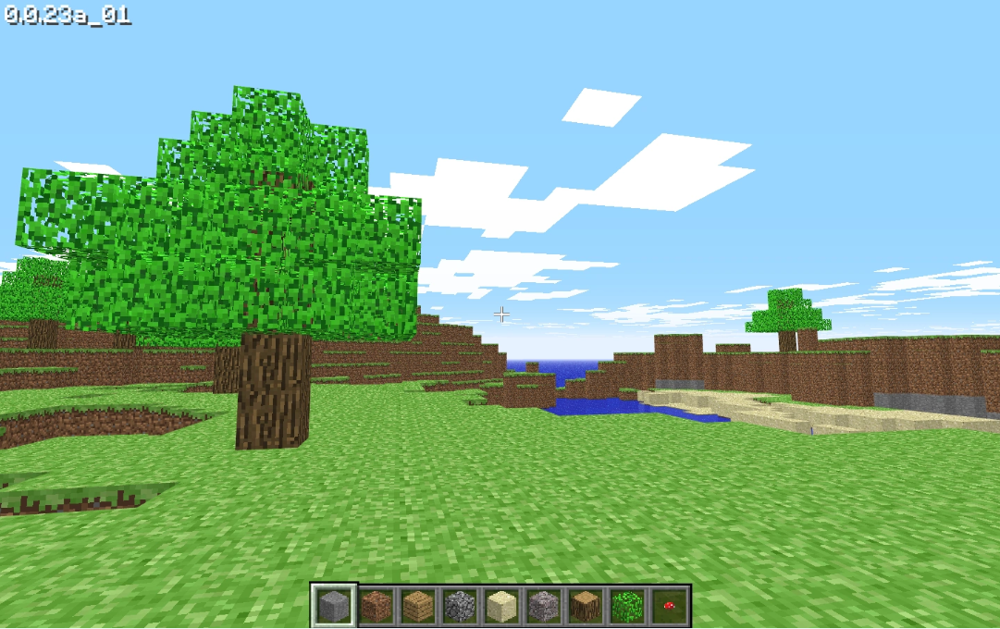
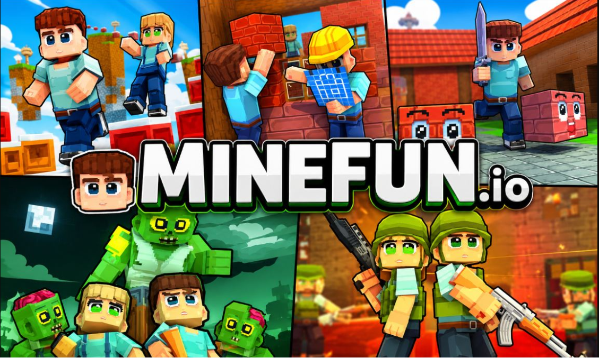
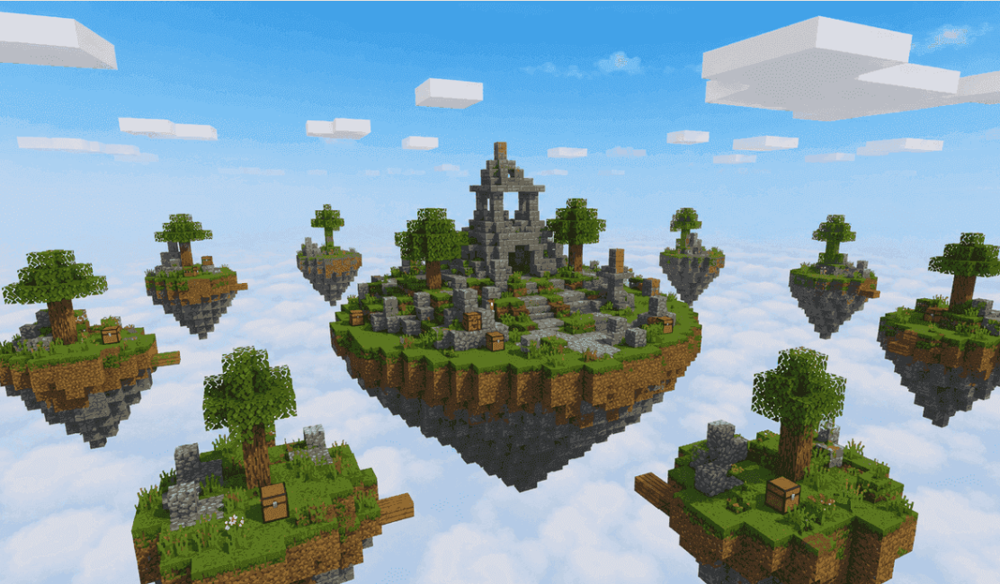
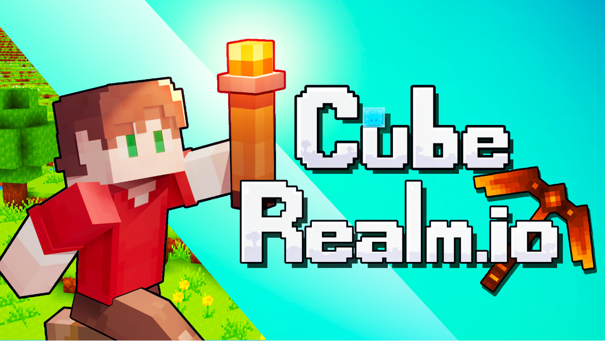
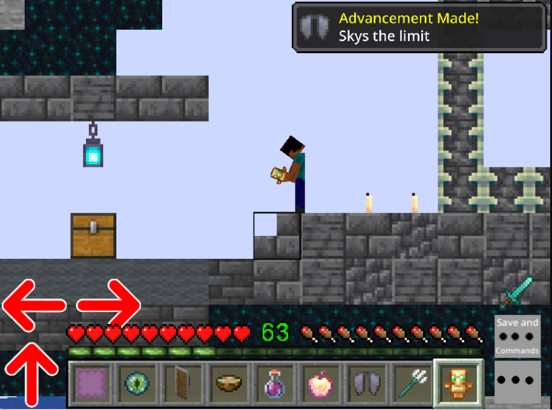
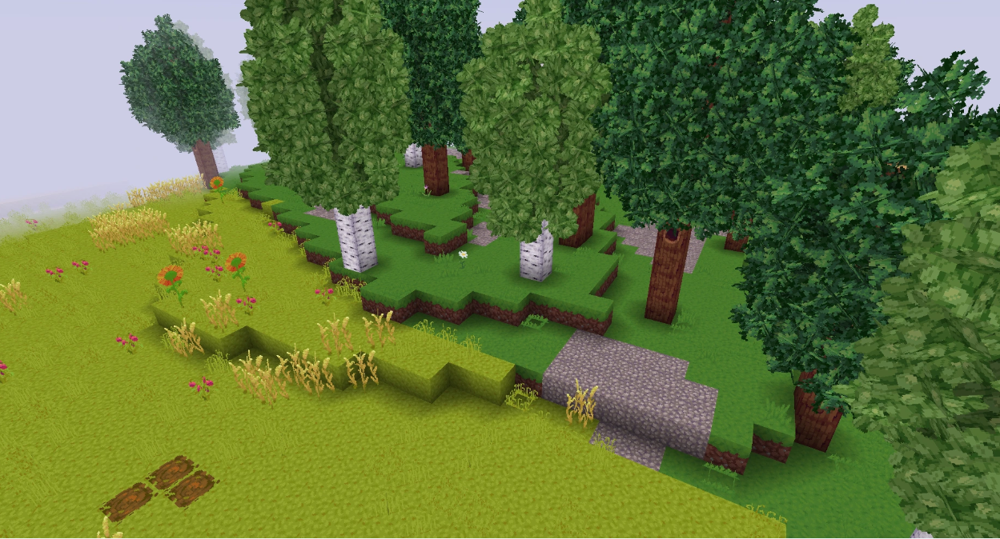
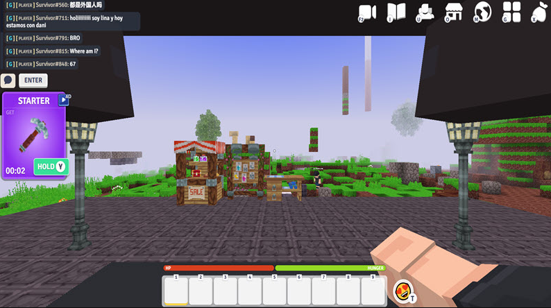
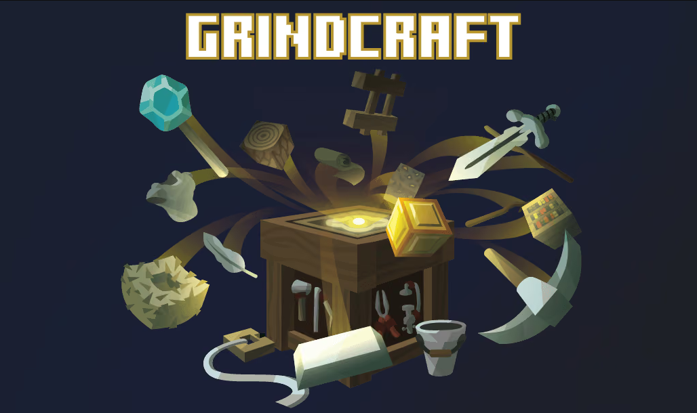

10 Free Browser Games Like Minecraft You Can Play With No Download (2026)

Quick Answer: What Are the Best Free Browser Games Like Minecraft?
The best free browser games like Minecraft with no download in 2026 are TerraVox 3D Sandbox (best for instant, clutter-free 3D building), Bloxd.io (best for parkour and multiplayer modes), Minecraft Classic (official 2009 Mojang web version), MineFun.io, Miniblox, CubeRealm.io, Paper Minecraft, Vectaria.io, Voxiom.io, and GrindCraft. All 10 run directly in Chrome, Edge, Safari, or Firefox via HTML5 and WebGL.
Why Browser Voxel Games Are Booming in 2026
You no longer need a paid launcher, a 1 GB installation, or a gaming GPU to enjoy block-building, mining, and survival crafting. Thanks to modern WebGL and HTML5 engines, browser-based voxel sandboxes load in seconds—even on school Chromebooks, office laptops, or low-storage PCs.
Whether you want peaceful creative construction, hardcore resource survival, 2D speedrunning, or competitive BedWars lobbies, these 10 free games capture the core magic of Minecraft right inside a browser tab:
- Zero downloads or installers: Click play and spawn directly into a world.
- Free to play: No upfront purchase, subscription, or mandatory paywall.
- Low hardware requirements: Runs smoothly on integrated graphics and everyday laptops.
- Distinct subgenres: Choose between pure 3D voxel building, multiplayer minigames, 2D crafting, or voxel FPS battles.
The 10 Best Free Browser Games Like Minecraft (No Download)
1. TerraVox 3D Sandbox (Best for Instant 3D Building & Exploration)
TerraVox 3D Sandbox is a fast-loading 3D voxel sandbox built specifically for instant browser play on GravityGamez.fun. While many web clones overload you with bloated menus or aggressive pop-ups before you place your first block, TerraVox drops you straight into a crisp 3D block world where you can explore terrain, harvest materials, and shape structures without friction.
Best for: Players who want pure, distraction-free 3D block building and sandbox exploration in seconds.
Key highlights:
- 100% browser-based WebGL engine—no downloads, plugins, or accounts required
- Classic first-person voxel movement and block placement/destruction mechanics
- Lightweight optimization tuned for quick loading on standard laptops and Chromebooks
- Ideal starting point for creative builds, terrain sculpting, and casual sandbox sessions
Play TerraVox 3D Sandbox Free →
2. Bloxd.io (Best for Multiplayer & Variety of Modes)

Bloxd.io is one of the most popular Minecraft-style multiplayer browser games on the web. Instead of offering a single sandbox map, it packs multiple distinct game modes into one lightweight interface—ranging from Peaceful and Survival open worlds to competitive BedWars, SkyWars, DoodleCube (building contests), and BloxdHop parkour races.
Best for: Multiplayer fans who want Survival, Creative, and parkour lobbies in one place.
Key highlights:
- 10+ playable modes including Survival, Creative, Peaceful, BedWars, and EvilTower
- Full touch-control support for mobile browsers alongside desktop keyboard/mouse
- Active global lobbies with instant matchmaking
3. Minecraft Classic (Best Official Nostalgia Experience)

Released officially by Mojang Studios at classic.minecraft.net to celebrate Minecraft's 10th anniversary, Minecraft Classic is a JavaScript/Babylon.js recreation of the original 2009 build (version 0.0.23a_01). You get 32 classic blocks, retro world generation, and a shareable invite link to build alongside up to 9 friends.
Best for: Pure nostalgia and authentic 2009 creative block building straight from Mojang.
Key highlights:
- 100% official Mojang web build—completely free with zero ads
- 32 classic blocks (including colored wool, stone, wood, and water)
- Multiplayer room sharing via URL (requires a desktop browser with keyboard & WebGL)
Note: Because it mirrors 2009 Classic, there is no survival crafting, mobs, or hunger bar—it is strictly creative building.
4. MineFun.io (Best for Mini-Games & Custom Rooms)

Created by developer MoVariYa, MineFun.io has surged in popularity as an all-in-one voxel minigame hub. Players can jump straight into Parkour islands, BedWars, SkyWars, Hide and Seek (prop hunt), Infection, and Creative building, or join private lobbies with friends using room codes.
Best for: Quick-hit minigames and playing private matches with friends.
Key highlights:
- 7+ core modes plus community-built custom games
- Instant guest play with optional Gmail linking to save coins and skins
- Smooth frame rates on both desktop and mobile browsers
5. Miniblox (Best Lightweight PvP & Survival Voxel World)

Miniblox (Miniblox.io) delivers crisp voxel visuals paired with classic Minecraft server staples. You can switch between solo/multiplayer Survival worlds, Creative plots, Parkour gauntlets, SkyWars, and fast archery or melee PvP arenas—all inside a single browser tab.
Best for: Players who miss classic community server minigames like SkyWars and Duels.
Key highlights:
- Responsive movement and combat mechanics tailored for browser play
- Mix of Survival crafting worlds and fast PvP minigames
- No registration required to hop into public matches
6. CubeRealm.io (Best for Deep Survival & Crafting Progression)

Built by the developer behind Voxiom.io, CubeRealm.io blends Minecraft's 3D block world with Terraria-inspired progression and gear upgrades. Players explore floating sky islands and deep underground caves, mine rare ores, craft stronger armor and weapons, and even claim protected base chunks using built-in server commands.
Best for: Survival crafters who want deeper tool tiers, caves, and base protection.
Key highlights:
- Peaceful mode for cooperative building and Survival mode for PvP/PvE progression
- Chunk protection commands (
/protectors) and teleport home commands (/sethome) - Rich biomes ranging from sky islands to underground caverns (best on desktop)
7. Paper Minecraft (Best 2D Minecraft Experience)

Originally engineered on Scratch by Griffpatch and continuously expanded by community developers, Paper Minecraft translates the full Minecraft gameplay loop into a snappy 2D side-scroller. Despite being 2D, it packs an astonishing amount of depth—complete with crafting tables, villages, mob spawners, Nether portals, Elytra gliding, and even Ender Dragon fights.
Best for: Low-spec PCs, Chromebooks, and fans of Terraria-style 2D survival.
Key highlights:
- Runs effortlessly on almost any browser or older school laptop
- Full Survival, Peaceful, and Creative modes with exportable save codes
- Classic 2D crafting, villager trading, armor, and boss progression
8. Vectaria.io (Best for Classic Multiplayer Survival Worlds)

Vectaria.io focuses heavily on shared multiplayer worlds with three clear modes: Creative (build freely), Peaceful (survival resource gathering without PvP), and Survival (open PvP/PvE where players compete for territory and gear). Its bright blocky visuals and familiar crafting loop make it easy to pick up immediately.
Best for: Cooperative or competitive multiplayer survival in a traditional voxel setting.
Key highlights:
- Three distinct world types: Creative, Peaceful, and PvP Survival
- Smooth mining, inventory management, and server chat
- Quick browser load times with desktop-first controls
9. Voxiom.io (Best for Minecraft + FPS Battle Royale)

If you love Minecraft's destructible voxel aesthetic but crave fast-paced gunplay, Voxiom.io merges block mining and crafting directly into a 3D first-person shooter. You can dig tunnels, build instant cover, mine ore to upgrade weapon tiers at crafting stations, and battle in Capture the Gems, Free-for-All, or Battle Royale modes.
Best for: FPS players who want destructible voxel maps and tactical building.
Key highlights:
- Fully destructible 3D voxel terrain with real-time digging and fort building
- Multiple competitive shooter modes including Battle Royale and Capture the Gems
- In-match ore mining and weapon rarity upgrading
10. GrindCraft (Best for Idle Crafting & Automation Fans)

Developed by Playsaurus, GrindCraft strips away 3D movement to focus purely on Minecraft's most addictive loop: harvesting raw materials, unlocking crafting recipes, and automating production. You start by punching wood in the Overworld box, craft tools to unlock mines and mob drops, and eventually build villages staffed by workers who gather resources automatically.
Best for: Casual background play, incremental clicker fans, and resource-crafting purists.
Key highlights:
- Pure mouse/tap-friendly clicker mechanics—works great on desktop and mobile
- Hundreds of craftable tools, blocks, food items, and village upgrades
- Zero 3D motion sickness and ultra-lightweight performance
Quick Comparison Table: Top 10 Browser Games Like Minecraft
| Game | Best For | Style / Mode | Device Support | Download? |
|---|---|---|---|---|
| TerraVox 3D Sandbox | Instant 3D building & exploration | 3D Voxel Sandbox | Desktop & Laptop | No (Free) |
| Bloxd.io | Multiplayer & minigame variety | 3D Sandbox / Parkour / PvP | Desktop & Mobile | No (Free) |
| Minecraft Classic | Official 2009 Mojang nostalgia | 3D Creative (32 blocks) | Desktop (Keyboard) | No (Free) |
| MineFun.io | Party rooms & BedWars | 3D Cube Minigames | Desktop & Mobile | No (Free) |
| Miniblox | SkyWars & server minigames | 3D Voxel / Survival | Desktop & Mobile | No (Free) |
| CubeRealm.io | Deep survival & cave mining | 3D Survival / Peaceful | Desktop | No (Free) |
| Paper Minecraft | 2D survival on low-end PCs | 2D Side-Scrolling Sandbox | Desktop / Chromebook | No (Free) |
| Vectaria.io | Shared survival servers | 3D Survival / Creative | Desktop | No (Free) |
| Voxiom.io | Destructible voxel FPS action | 3D Voxel Battle Royale | Desktop | No (Free) |
| GrindCraft | Idle crafting & automation | 2D Crafting Clicker | Desktop & Mobile | No (Free) |
How to Pick the Right Minecraft Alternative for Your Device
Not every browser voxel game plays the same. Match your pick to how and where you play:
- Want instant 3D block building with zero clutter? Launch TerraVox 3D Sandbox on GravityGamez.fun and start placing blocks immediately.
- Playing on a school Chromebook or older laptop? Try TerraVox 3D Sandbox, Paper Minecraft, or GrindCraft for ultra-smooth frame rates.
- Playing with friends on a weekend? Hop into Bloxd.io, MineFun.io, or CubeRealm.io for shared multiplayer lobbies.
- Prefer shooter combat inside a blocky world? Load up Voxiom.io.
Tips for Smooth FPS in WebGL Voxel Games
- Enable Hardware Acceleration: In Chrome or Edge settings, ensure graphics/hardware acceleration is turned on so WebGL uses your GPU instead of your CPU.
- Lower Render Distance: If a 3D sandbox feels sluggish on a laptop, reduce chunk render distance inside the in-game settings menu.
- Close Background Video Tabs: Streaming tabs consume RAM that 3D voxel worlds need for smooth chunk loading.
- Use Fullscreen Mode: Pressing
F11(or the in-game fullscreen button) locks mouse-look properly and prevents accidental clicks outside the canvas.
Frequently Asked Questions
What are the best free browser games like Minecraft with no download?
The best free browser games like Minecraft with no download in 2026 include TerraVox 3D Sandbox on GravityGamez.fun, Bloxd.io, Minecraft Classic, MineFun.io, Miniblox, CubeRealm.io, Paper Minecraft, Vectaria.io, Voxiom.io, and GrindCraft. All run directly inside modern web browsers using HTML5 and WebGL.
Is TerraVox 3D Sandbox free to play without an account?
Yes. TerraVox 3D Sandbox is 100% free to play in your browser on GravityGamez.fun with no downloads, no launcher installation, and no mandatory account sign-up.
Can you still play the official Minecraft Classic in a browser?
Yes. Mojang's official Minecraft Classic remake remains playable free at classic.minecraft.net on desktop browsers with WebGL and a keyboard. It recreates the 2009 version with 32 blocks and shareable multiplayer invite links.
Which browser game like Minecraft works best on a Chromebook or low-end PC?
Lightweight HTML5 titles like TerraVox 3D Sandbox, Bloxd.io, Paper Minecraft, and GrindCraft run smoothly on Chromebooks and older laptops because they do not require heavy client downloads or dedicated graphics cards.
Which free Minecraft-style browser game is best for multiplayer minigames?
Bloxd.io, MineFun.io, and Miniblox are the top picks for multiplayer minigames, offering BedWars, SkyWars, Parkour, Hide and Seek, and custom private rooms.
Are no-download Minecraft browser games safe to play?
Yes, as long as you play on reputable browser gaming platforms that run games inside standard HTML5/WebGL sandboxes without asking you to download .exe, .apk, or browser extension files.
Final Thoughts
Whether you want to build giant voxel castles in TerraVox 3D Sandbox, race friends through parkour towers in Bloxd.io, or revisit 2009 blocks in Minecraft Classic, browser technology makes sandbox creativity completely free and instant. Bookmark your favorites and start building in seconds—no downloads required.
Start building right now in your browser
Jump straight into TerraVox 3D Sandbox with zero downloads or sign-ups.